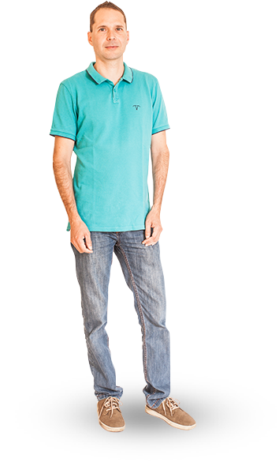
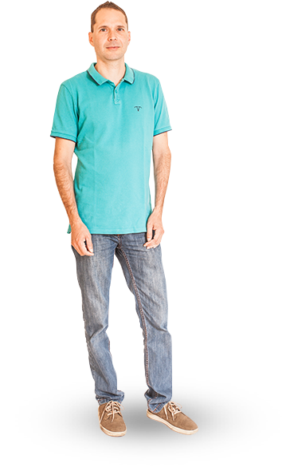
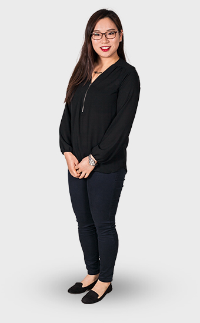
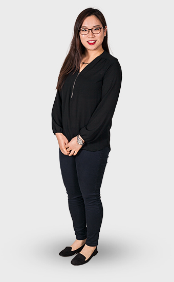
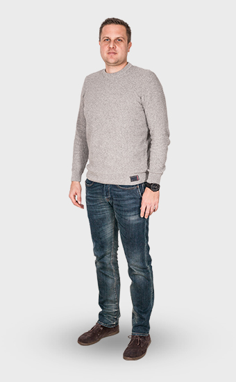
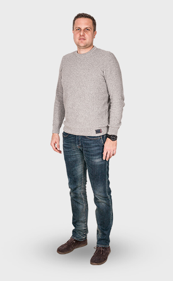

appelle maintenant | +36 96 56 64 72
appelle maintenant | +36 96 56 64 72
 appelle maintenant: +36 96 56 64 72
Contactez nous
fr
appelle maintenant: +36 96 56 64 72
Contactez nous
fr

Docteur en chirurgie dentaire esthétique, implantatrice et restauratrice . Dr Kannmann a obtenu sa thèse de doctorat à l’Université Semmelweis de Budapest en 1980 et démarra son activité d’enseignant-chercheur à l’Institut d’anatomie de la faculté de médecine de Rostock où il obtint les diplômes de docteur en médecine et physiologie.
Durant sa formation post-thèse, il a obtenu un diplôme d’implantologie de médecine au laser et de chirurgie dentaire esthétique. Il aime les voyages, la plongée et la photo sous-marines.
certifications
 

Que ce soit en tant que dentiste ou bien comme personne privée, le Dr Christian Menko se considère comme un chercheur. Il aime les voyages en pays lointains ou plus proches aime découvrir des contrées inconnues aime rencontrer des personnes intéressantes et hors du commun , voire exotiques, . Il aime connaître leurs spécialités culinaires et leur us et coutumes.
Afin de ne pas profiter seul de ses découvertes, il aime faire participer les autres à ses rencontres que ce soit par des histoires riches d’enseignements ou les avancées constantes dans le domaine de la chirurgie dentaire.
certifications

Je suis un dentiste de la Corée du Sud. Je suis diplômé de l'Université de Pécs en Hongrie. Je suis passionné par mon travail dans la clinique et j'espère interagir avec les patients comme un bon ami.
Je parle couramment anglais, coréen, chinois, hongrois et allemand.
Dans mon temps libre je vais au centre de conditionnement physique et j'aime faire du yoga. Je suis intéressé à boire différents types de thé et d'essayer différents types de grains de café.
certifications 

Je m'appelle Hye-Won Jeon, je suis de Corée du Sud. Je suis dentiste général, diplômé de l'Université Semmelweis à Budapest en Hongrie. Je suis multilingue, je parle l'anglais, le coréen, le chinois de base, le hongrois et le néerlandais. J'aime voyager à différents pays et rencontrer les nouveaux gens de différentes cultures. Sur une base quotidienne, j'aime travailler dehors à la gym. C'est une excellente occasion pour moi d'être membre de l'équipe HD-dentaire.
N'hésitez pas à me parler à la clinique!
certifications

C’est son premier poste. Elle aime parler aux patients et les soutenir durant les traitements qui peuvent être stressants.
Elle aime son cheval « Rémeny » ( Espérance en français), qu’elle monte tous les jours. Elle aime rencontrer des amis, le cinéma les concerts et s’amuser.


Elle travaille dans ce domaine dpuis 10 ans. Elle vise la satisfaction maximum des patients et médecins.
Elle aime les fleurs, en particulier la lavande . Elle possède 64 plantes dont elle fait confitures, marmelades et sirops. Elle aime se rendre dans la région de Tihany aux gigantesques champs de lavande.


Elle est convaincue que l’empathie permet une prise de contact plus rapide. Cela aide les patients à être plus ouverts envers elle, ce qui joue un rôle clé en tant que kinésithérapeute. Elle élargit sans cesse ses connaissances, afin d’offrir son aide aux patients dans de nombreux domaines. Son rêve est d’apprendre la méthode Dévèny afin de pouvoir travailler avec les enfants.
Elle aime voyager, le sport et le cross-fitness.


A l’origine il était conducteur de locomotive et a ainsi eu l’occasion de beaucoup voyager . A la naissance de son premier enfant, il a souhaité passer davantage de temps avec sa famille et s’est recyclé par une formation de masseur.
Il aime apporter son aide aux gens et les aider à atténuer leurs douleurs.


Réceptionniste de notre clinique depuis 15 ans. C’est pour elle toujours une rencontre intéressante que celle des personnes d’autres nationalités. Elle a eu d’autres expériences professionnelles ais c’est cette dernière qu’elle préfère.
Elle aime les loisirs en famille et avec ses amis. Elle aime les voyages, le yoga et le nia.
 

J'ai obtenu mon diplôme en 2003 à l'Université de Pécs à la faculté de médecine générale. J'ai réussi mes examens professionnels dans le domaine de l'anesthésiologie et de la thérapie intensive. Je considère le travail comme un anesthésiologiste comme très important et responsable, puisque nos patients nous confient leur v.
L'aspect positif de ma profession est que, à la suite de mon travail, les gens ne ressentent aucune douleur ou stress pendant les traitements.

Je travaille comme assistant médical depuis plus de trois décennies. Ces dernières années, j'ai travaillé avec le Dr Bátorfi comme son assistant d'anesthésie dans divers cabinets dentaires.
Je suis passionné par mon travail, tout comme sur la cuisine et la cuisson, deux de mes hobbies que ma famille apprécie aussi bien. J'aime aussi le jardinage, la lecture et j'ai récemment pris plaisir à faire des bijoux perlés.


Je suis un technicien dentaire et travaille actuellement comme apprenti assistant médical avec HD-dentaire.
Je passe beaucoup de temps avec mes amis faire des excursions ou aller au cinéma.

 Chercher sur la carte
Chercher sur la carte
réseaux
sociaux